Turma: 3ESR.
Equipe: Mateus dos Santos da Silva (RM 558436), Nickolas Moreno Cardoso (RM 557132), André Giovane de Maria (RM 556384).
Azure Boards: https://dev.azure.com/RM558436/gstemperatura
Acesso do professor: profandre.leite@fiap.com.br adicionado como administrador do projeto.
Pitch geral: https://youtu.be/SWXc7I-uzDY
Homologação das jornadas de risco térmico, pontos seguros, relato anônimo, sensor e resiliência operacional.
As cinco Features e critérios de aceite estão documentados em features.md e cadastrados no Azure Boards com os IDs 13 a 17.
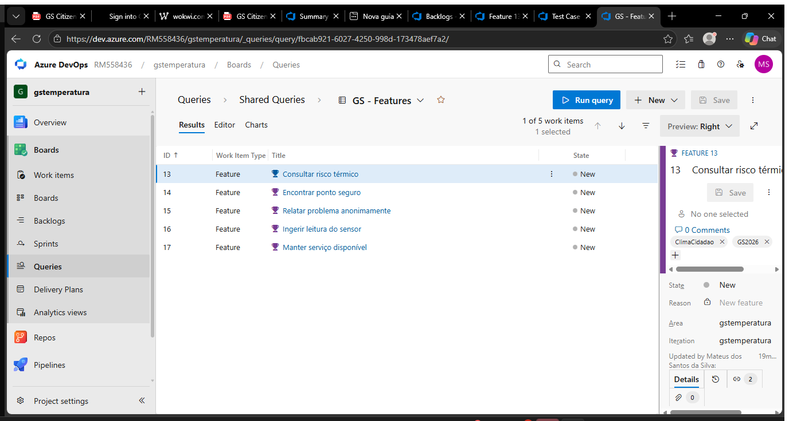
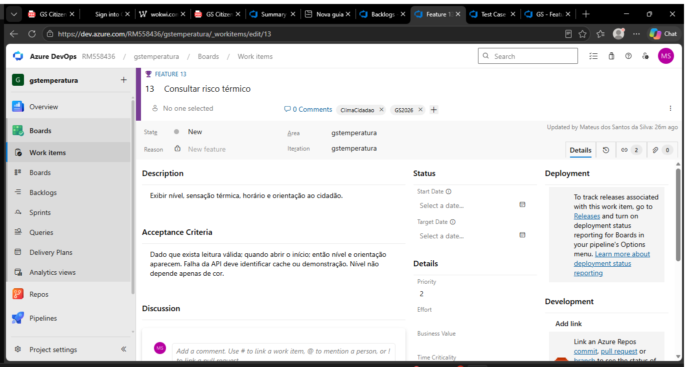
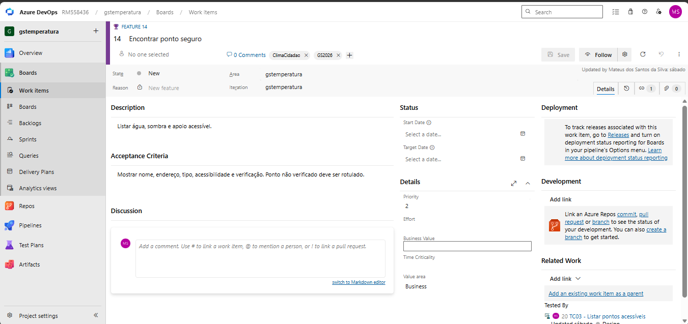
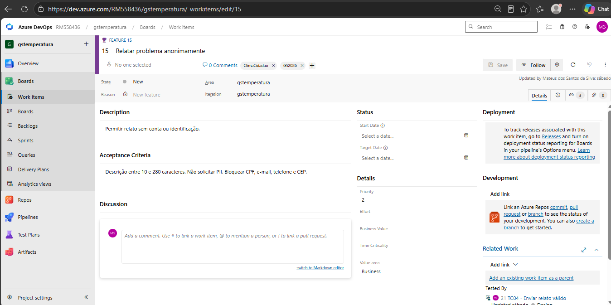
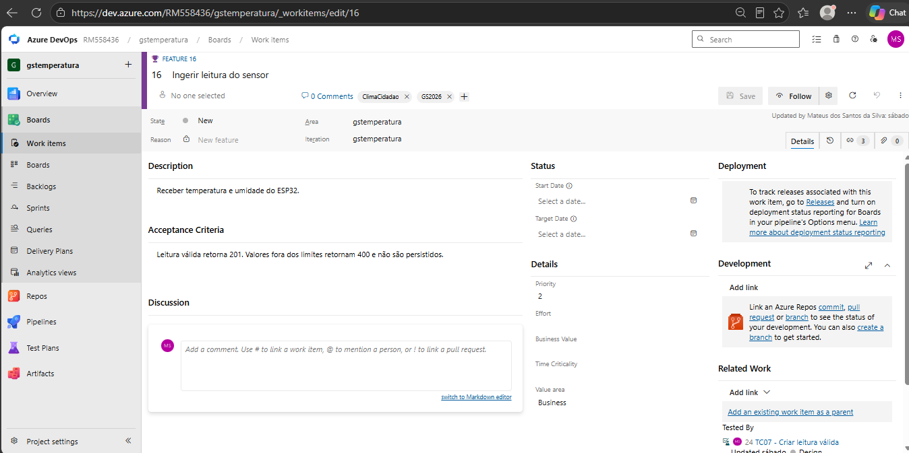
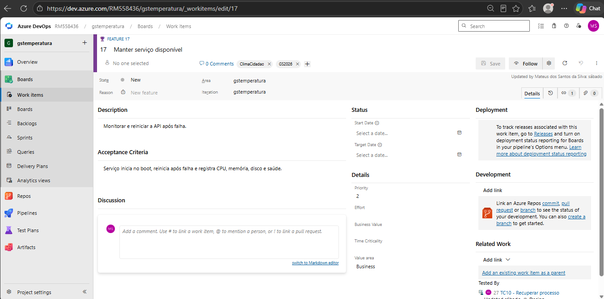
Dados conferidos diretamente no Azure Boards. Os IDs abaixo são links para os respectivos Work Items.
| ID | Feature | Descrição | Critérios de aceite | Test Cases |
|---|---|---|---|---|
| #13 | Consultar risco térmico | Exibir nível, sensação térmica, horário e orientação ao cidadão. | Com leitura válida, a tela deve apresentar nível e orientação. Falha da API deve identificar cache/demonstração. O nível não pode depender somente de cor. | #18–#19 |
| #14 | Encontrar ponto seguro | Listar água, sombra e apoio acessível. | Mostrar nome, endereço, tipo, acessibilidade e verificação. Ponto não verificado deve ser rotulado. | #20 |
| #15 | Relatar problema anonimamente | Permitir relato sem conta ou identificação. | Descrição entre 10 e 280 caracteres. Não solicitar PII. Bloquear CPF, e-mail, telefone e CEP. | #21–#23 |
| #16 | Ingerir leitura do sensor | Receber temperatura e umidade do ESP32. | Leitura válida retorna HTTP 201. Valores fora dos limites retornam HTTP 400 e não são persistidos. | #24–#26 |
| #17 | Manter serviço disponível | Monitorar e reiniciar a API após falha. | Serviço inicia no boot, reinicia após falha e registra CPU, memória, disco e saúde. | #27 |
Os dez casos de caixa-preta, positivos e negativos, estão documentados em test_cases.csv e cadastrados com os IDs 18 a 27. Todos possuem passos, entradas, resultados esperados e relação Tested By com a Feature correspondente.
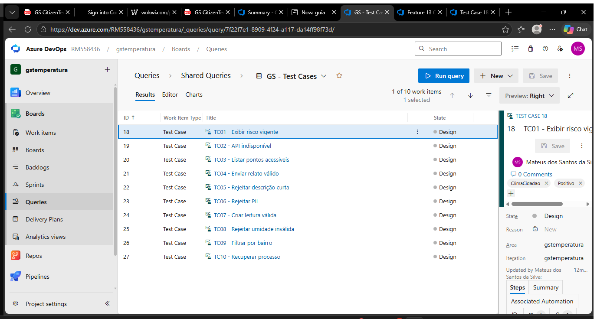
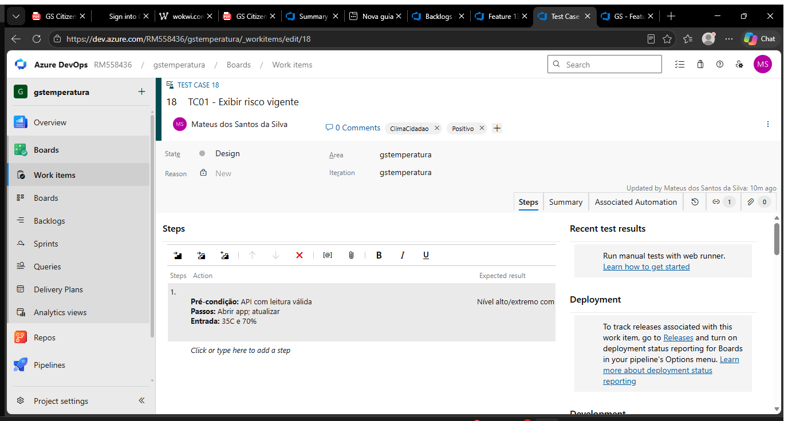
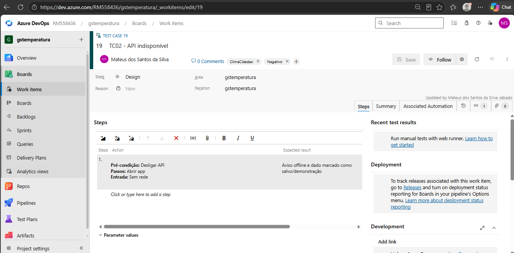
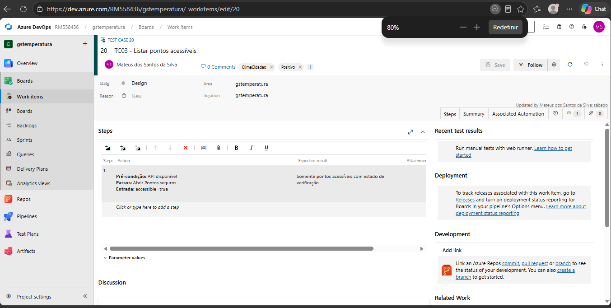
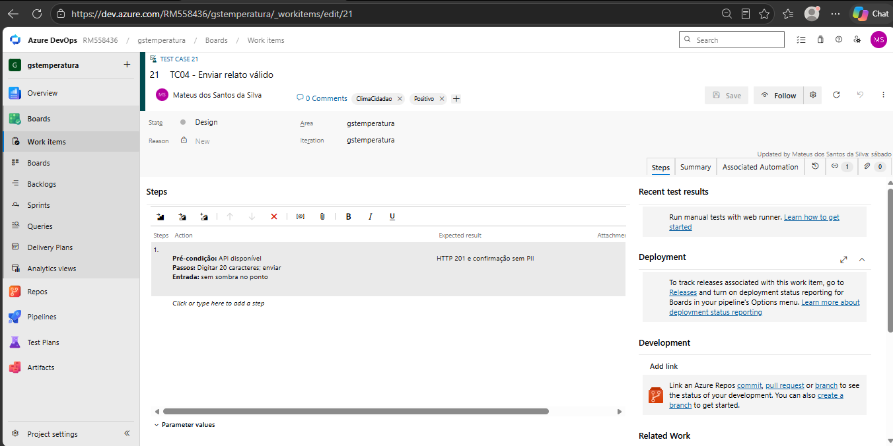
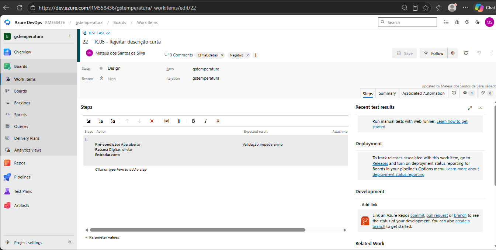
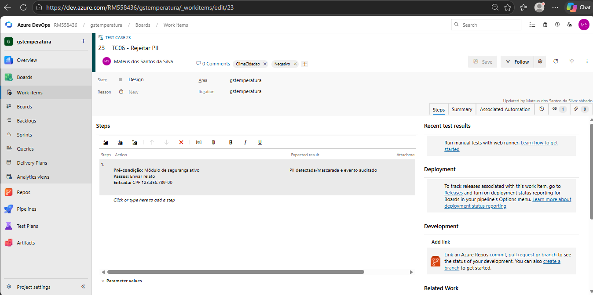
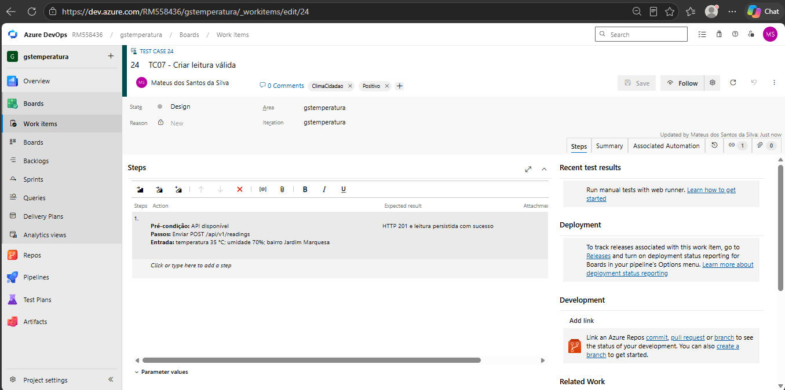
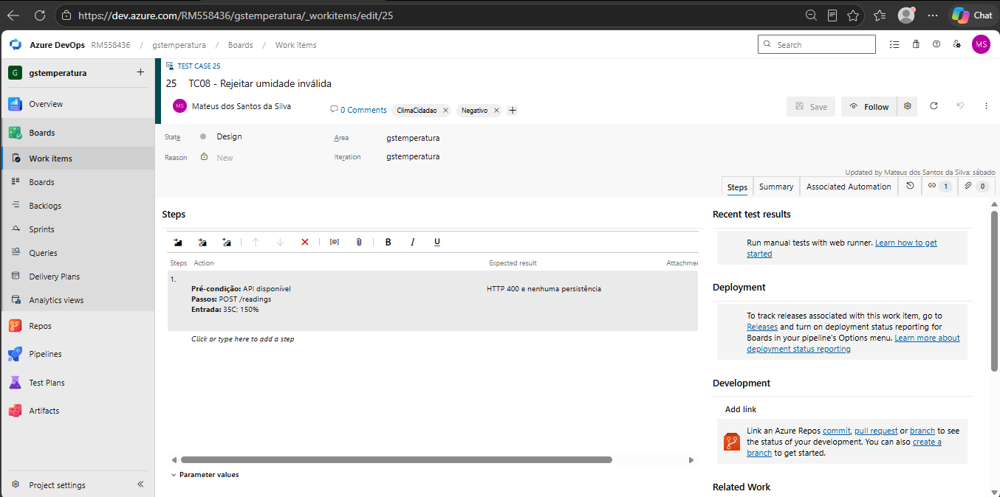
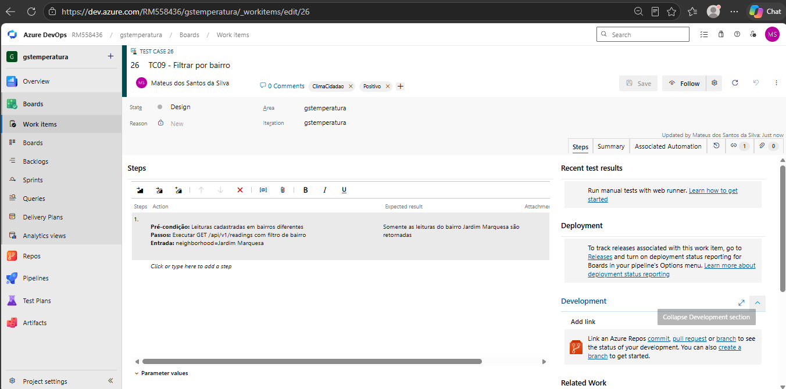
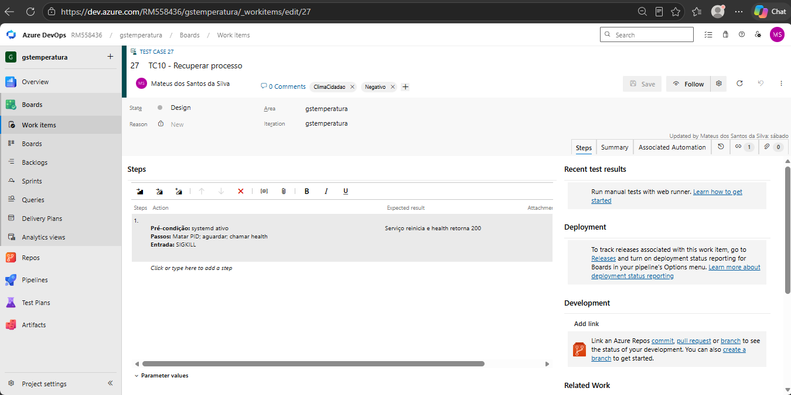
Casos funcionais de caixa-preta, positivos e negativos. Cada ID aponta para o cadastro real no Azure Boards.
| ID | Feature | Caso e tipo | Preparação e passos | Entrada | Resultado esperado |
|---|---|---|---|---|---|
| #18 | #13 | Exibir risco vigente Positivo | API com leitura válida. Abrir o app e atualizar. | 35 °C e 70% | Nível, sensação térmica, horário e orientação apresentados. |
| #19 | #13 | API indisponível Negativo | Desligar a API e abrir o app. | Sem rede | Aviso offline e dado identificado como salvo ou demonstrativo. |
| #20 | #14 | Listar pontos acessíveis Positivo | API disponível. Abrir “Pontos seguros”. | accessible=true | Pontos acessíveis com endereço, tipo e estado de verificação. |
| #21 | #15 | Enviar relato válido Positivo | Abrir o formulário, preencher e enviar. | Descrição anônima com 20 caracteres | HTTP 201 e confirmação sem armazenamento de PII. |
| #22 | #15 | Rejeitar descrição curta Negativo | Abrir o formulário, digitar e tentar enviar. | Texto com menos de 10 caracteres | Validação impede o envio. |
| #23 | #15 | Rejeitar PII Negativo | Enviar relato contendo dado pessoal fictício. | CPF 123.456.789-00 | HTTP 400, indicação para remover PII e nenhuma persistência. |
| #24 | #16 | Criar leitura válida Positivo | Enviar leitura pelo endpoint do sensor. | 35 °C, 70%, Jardim Marquesa | HTTP 201 e leitura persistida. |
| #25 | #16 | Rejeitar umidade inválida Negativo | Enviar leitura fora dos limites. | 35 °C e 150% | HTTP 400 e nenhuma persistência. |
| #26 | #16 | Filtrar por bairro Positivo | Preparar leituras de dois bairros e consultar com filtro. | neighborhood=Jardim Marquesa | Somente leituras do bairro solicitado. |
| #27 | #17 | Recuperar após falha Negativo | Com systemd ativo, encerrar o PID, aguardar e consultar /health. | SIGKILL | systemd reinicia o serviço e a API retorna HTTP 200. |
| Feature no Azure | Casos relacionados |
|---|---|
| #13 — Consultar risco térmico | #18–#19 |
| #14 — Encontrar ponto seguro | #20 |
| #15 — Relatar problema anonimamente | #21–#23 |
| #16 — Ingerir leitura do sensor | #24–#26 |
| #17 — Manter serviço disponível | #27 |
A estrutura de homologação foi cadastrada no Azure Boards: cinco Features, dez Test Cases e rastreabilidade entre requisitos e testes. Todos os itens possuem descrição, critérios ou passos, entradas e resultados esperados. Na validação local, a API compilou, quatro testes xUnit passaram e os fluxos de saúde, leitura válida e inválida, filtro por bairro, relato anônimo, bloqueio de PII, pontos acessíveis, risco e Swagger foram aprovados. O teste de recuperação foi validado no ambiente Ubuntu com systemd.